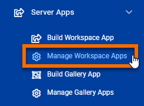
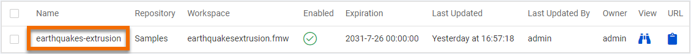
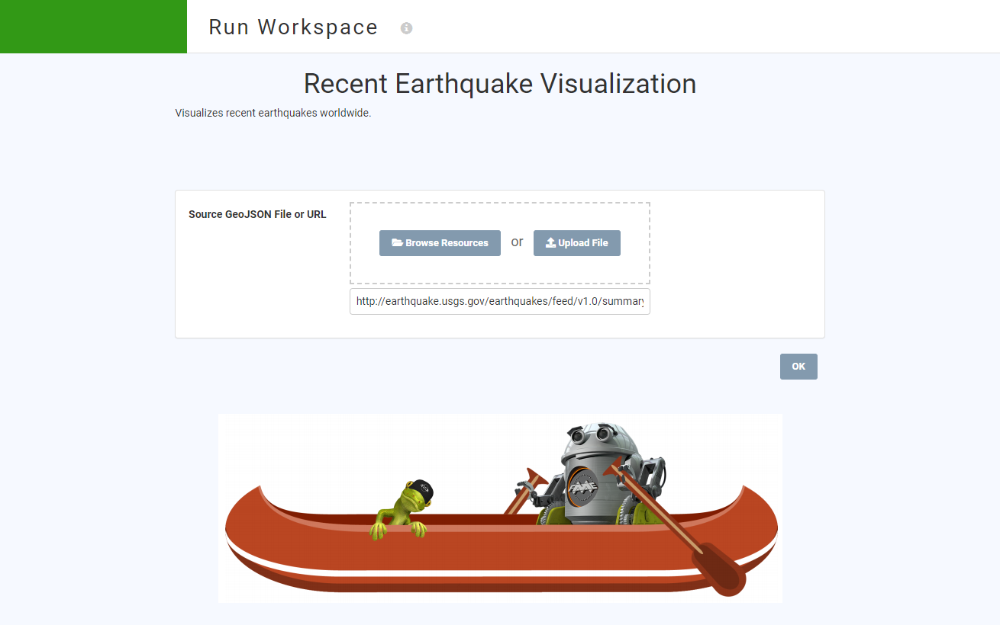

After completing this unit, you’ll be able to:
If you want to quickly create an FME Server App primarily for internal use, you might not care how it appears. But if you are creating an end-user or public-facing app, you probably want it to reflect your brand. This is especially true if you plan on hosting the app where it needs to blend in, such as your organization's website.
Luckily, you can customize your App in a number of ways.
You created the Recent Earthquake Visualization Server App in the last exercise. To edit it, click the Server Apps section in the FME Server menu, and then click Manage Workspace Apps.

Click on earthquakes-extrusion to edit it.

Below the workspace selection area, you will see the collapsed Parameters and Customize sections.
Expand Customize by clicking on it. Here you can control many areas of the Server App page to match your organization's branding, including:
Here is where those different elements will appear on the App page:
Change Header Background Color to green. Then download CanoeZipster.png and set it as the Footer Logo. You can also edit any of the other customization parameters if you wish.

Click OK to finish editing the Server App.
Click the link on the resulting page to view your app.

You should see a green header and large footer image.
